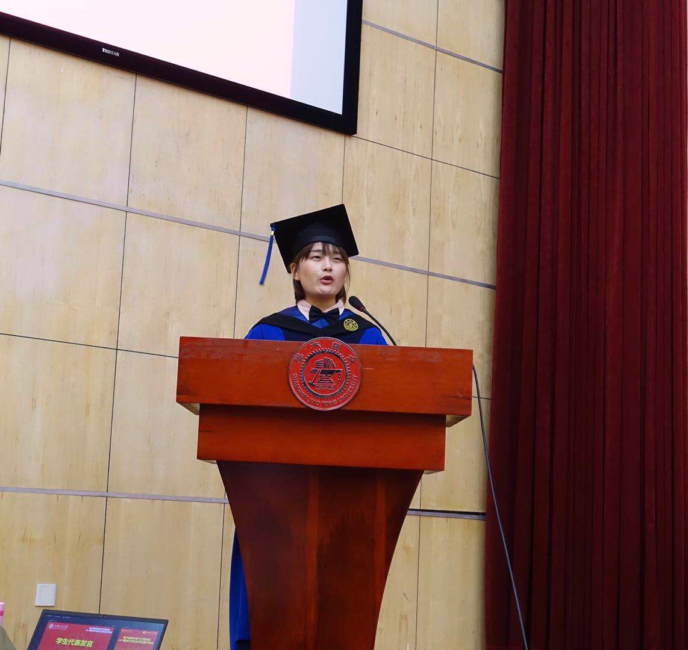
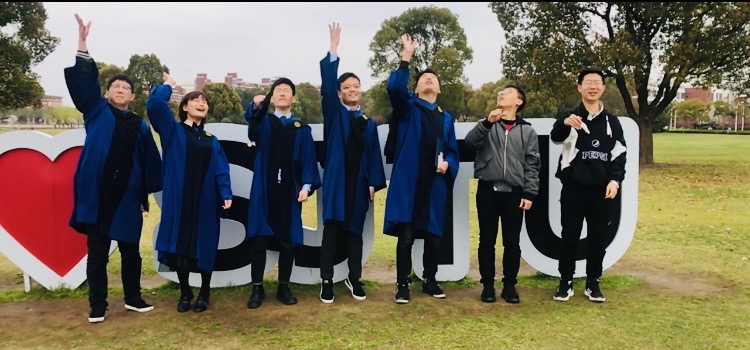

2019.03.30


春光明媚，硕士毕业季如期而至。作为硕士生代表进行发言，让自己的梦想被撑大，‘纵有千古，横有八荒，前途似海，来日方长’。三月的交大，🌸似锦，在交大的每个标志性角落与好朋友拍照留恋。此刻内心没有过多的激动与不舍，更多的是期待，期待自己在自我选择下成长。
人的独立性和参与性必须适得其所，平衡发展。一方面，过分的参与必然导致远离自我核心，现代人之所以感到空虚、无聊，在很大程度上就是由于顺从、依赖和参与过多，脱离了自我核心。另一方面，过分的独立会将自己束缚在狭小的自我世界内，缺乏正常的交往，必然损害人的正常发展。